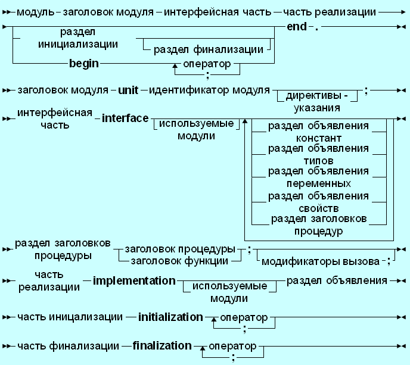

| Тема 3. Структура модуля в Pascal. | ||
| Назад | ||
|
Всякий модуль Паскаля имеет следующую структуру: Unit <имя_модуля>; interface <интерфейсная часть>; implementation < исполняемая часть >; begin <инициирующая часть>; end . Здесь UNIT – зарезервированное слово (единица); начинает заголовок модуля; <имя_модуля> - имя модуля (правильный идентификатор); INTERFACE – зарезервированное слово (интерфейс); начинает интерфейсную часть модуля; IMPLEMENTATION – зарезервированное слово (выполнение); начинает исполняемую часть модуля; BEGIN – зарезервированное слово; начинает инициирующую часть модуля; причем конструкция begin <инициирующая часть> необязательна; END – зарезервированное слово – признак конца модуля. Таким образом, модуль Паскаля состоит из заголовка и трех составных частей, любая из которых может быть пустой.  Заголовок модуля Паскаля и связь модулей друг с другом Заголовок модуля Паскаля состоит из зарезервированного слова unit и следующего за ним имени модуля. Для правильной работы среды Турбо Паскаля и возможности подключения средств, облегчающих разработку больших программ, имя модуля Паскаля должно совпадать с именем дискового файла, в который помещается исходный текст модуля. Если, например, имеем заголовок модуля Паскаля Unit primer ; то исходный текст этого модуля должен размещаться на диске в файле primer .pas . Имя модуля Паскаля служит для его связи с другими модулями и основной программой. Эта связь устанавливается специальным предложением: uses<список модулей> Здесь USES – зарезервированное слово (использует); <список модулей> - список модулей, с которыми устанавливается связь; элементы списка – имена модулей через запятую. Если в Паскале модули используются, то предложение uses <список модулей> должно стоять сразу после заголовка программы , т.е. должно открывать раздел описаний основной программы. В модулях Паскаля могут использоваться другие модули. В модулях предложение uses <список модулей> может стоять сразу после слова interface или сразу после слова implementation . Допускается и два предложения uses , т.е. оно может стоять и там, и там. Интерфейсная часть Интерфейсная часть открывается зарезервированным словом INTERFACE . В этой части содержатся объявления всех глобальных объектов модуля (типов, констант, переменных и подпрограмм), которые должны быть доступны основной программе и (или) другим модулям Паскаля. При объявлении глобальных подпрограмм в интерфейсной части указывается только их заголовок, например: Пример фрагмента программы Unit complexn; Interface Type Complex= record Re, im: real; End; Procedure AddC(x,y: complex, var z: complex); Procedure MulC (x,y: complex, var z: complex); Если теперь в основной программе написать предложение Uses complexn ; то в программе станут доступными тип cmplex и две процедуры – AddC и MulC из модуля complexn . Отметим, что объявление подпрограмм в интерфейсной части автоматически сопровождается их компиляцией с использованием дальней модели памяти. Таким образом, обеспечивается доступ к подпрограммам из основной программы и других модулей Паскаля. Следует учесть, что все константы и переменные, объявленные в интерфейсной части модуля Паскаля, равно как и глобальные константы и переменные основной программы, помещаются компилятором Турбо Паскаля в общий сегмент данных (максимальная длина сегмента 65536 байт). Порядок появления различных разделов объявлений и их количество может быть произвольным. Если в интерфейсной части объявляются внешние подпрограммы или подпрограммы в машинных кодах, их тела (т.е. зарезервированное слово EXTERNAL , в первом случае, и машинные коды вместе со словом INLINE – во втором) должны следовать сразу за их заголовками в исполняемой части модуля (не в интерфейсной!). В интерфейсной части модулей Паскаля нельзя использовать опережающее описание. Исполняемая часть модуля Паскаля Исполняемая часть модуля Паскаля начинается зарезервированным словом IMPLEMENTATION и содержит описания подпрограмм, объявленных в интерфейсной части. В ней могут объявляться локальные для модуля объекты – вспомогательные типы, константы, переменные и блоки, а также метки. Описанию подпрограммы, объявленной в интерфейсной части модуля Паскаля, в исполняемой части должен предшествовать заголовок, в котором можно опустить список формальных параметров и тип результата для функции, так как они уже описаны в интерфейсной части. Но если заголовок подпрограммы приводится в полном виде, т.е. со списком параметров и объявлением типа результата для функции, то он должен полностью совпадать с заголовком подпрограммы в интерфейсной части, например: Пример модуля Паскаля
Unit complexn;
{--------------------------------}
Interface
Type
Complex= record
Re, im: real;
End;
Procedure AddC(x,y: complex, var z: complex);
{---------------------------------}
Implementation
Procedure AddC;
z.re:= x.re + y.re;
z.im:= x.im + y.im;
end ;
end .Инициирующая часть модуля Паскаля Инициирующая часть завершает модуль Паскаля. Она может отсутствовать вместе с начинающим ее словом BEGIN или быть пустой – тогда вслед за BEGIN сразу следует признак конца модуля. В инициирующей части размещаются исполняемые операторы, содержащие некоторый фрагмент программы. Эти операторы исполняются до передачи управления основной программе и обычно используются для подготовки ее работы. Например, в инициирующей части могут инициироваться переменные, открываться файлы, устанавливаться связи с другими компьютерами и т.п.: Пример модуля Паскаля
Unit fileText;
{-------------------------------}
Interface
Procedure print(s: string);
{-------------------------------}
implementation
var f: text;
const
name= 'output.txt';
procedure print;
begin
writeln(f, s)
end ;
{---------------------------------}
{начало инициирующей части}
begin
assign(f, name);
rewrite ( f );
{конец инициирующей части}
end .Не рекомендуется делать инициирующую часть пустой, лучше ее опустить. |
||
| Конспект подготовлен Бакулиным А. М. 2012 год. | ||